App issues
Last updated July 20th, 2026
To help you identify potential problems with apps in your managed device fleet, two insights are available on the dashboard. Both of these insights share the same data set, and present your fleet’s underlying app issue data from two complementary perspectives.
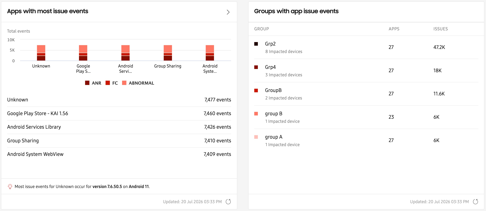
-
The Apps with most issue events insight collects and consolidates app-usage data to help surface problems that may be at the highest risk of disrupting business operations, such as apps crashing, apps not responding, or apps reporting abnormal behaviors. This gives you a fleet-wide, app-centric view of where problems are concentrated.
-
The Groups with app issue events insight displays the top five groups in your fleet that reported the highest number of app issues. Rather than showing which apps are most problematic, it shows which groups of devices are experiencing the most app issues overall.
What is reported by these insights?
App issues reported by Knox Asset Intelligence are categorized as the following:
- App Not Responding (ANR) events - instances where an application stops responding to user input.
- Force close (FC) events - cases where an app unexpectedly terminates or crashes.
- Abnormal events - other irregular app behaviors that fall outside normal operating patterns.
To address user privacy concerns on personally-owned devices, Knox Asset Intelligence only monitors apps installed in the work profile. If an app is installed in both the work and personal profiles, then only app issue data from the work profile is reported.
About ANR and FC events
On Samsung devices, a hardware quality manager service captures any fatal errors that may have occurred with your apps in real time. These error events are collected by the Knox Asset Intelligence agent and reported back to the server as App Not Responding (ANR) and Force Close (FC) data. You can use ANR and FC data to identify whether app issue events are isolated incidents, or if there’s an overall stability issue with a specific app or specific version of an app.
ANR and FC events are uploaded to the Knox Asset Intelligence server at a configurable time interval, which can be configured in Dashboard settings. By default, this interval is once per hour, but you can change it to any value between 1 and 24 hours in the provided field.
About Abnormal app events
Knox Asset Intelligence can automatically detect and log a set of pre-defined app events types that have the potential to cause excessive battery drain on your fleet’s devices. These events are identified in this insight as Abnormal app events, and include the following:
- Excessive CPU usage in background
- Excessive background syncing
- Excessive binder calls
- Excessive camera usage in background
- Excessive memory usage
- Excessive system resource usage
- Frequent crashes
- Frequent job scheduling
- Frequent location checks in background
- Frequent mobile traffic in background
- Frequent wakelock when screen is off
- Frequently wakes up in background
Like with ANR and FC events, Abnormal app events are also uploaded to the Knox Asset Intelligence server at a configurable time interval, which can be configured in Dashboard settings. By default, this interval is once per hour, but you can change it to any value between 1 and 24 hours in the provided field.
Dashboard tile views
Apps with most issues events
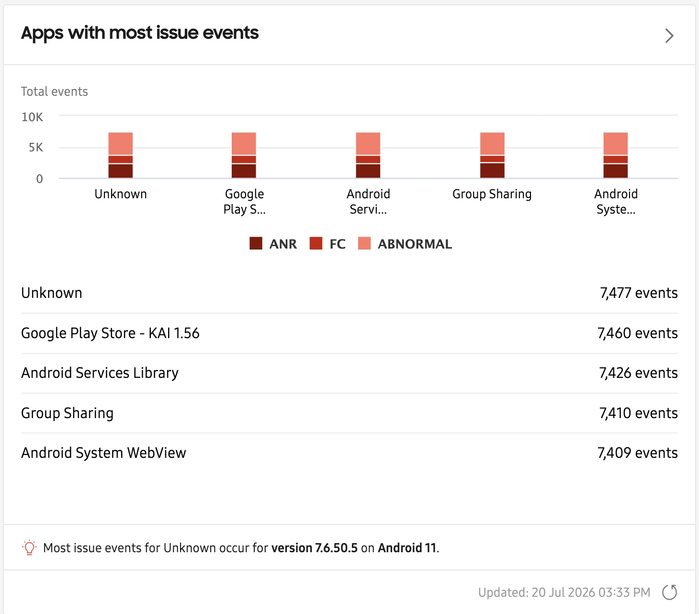
The Apps with most issues events tile helps you identify and visualize which apps are at the highest risk of disrupting business operations. This chart shows the top-five apps on your devices that triggered ANR, FC, or Abnormal app events. The information in the notification area identifies the app, app version, and OS version associated with the highest number of issue events.
Click the button near the top-right corner of the tile to go to an expanded details page that shows all app issues across your entire device fleet. Alternatively, if you want investigate issues for one of the top-five apps, click the app name or its event count to go to its drill-down page.
This chart shows the top 5 apps on your devices that triggered the application not responding, force close, or abnormal events. The information at the bottom of the chart identifies the top app and determines which app version and OS version are associated with the highest number of issue events.
Groups with app issue events
If your devices are associated with groups, the Groups with app issue events tile lists the top five groups with the highest number of reported app issues, the number of impacted apps associated with those issues, and the number of unique impacted devices.
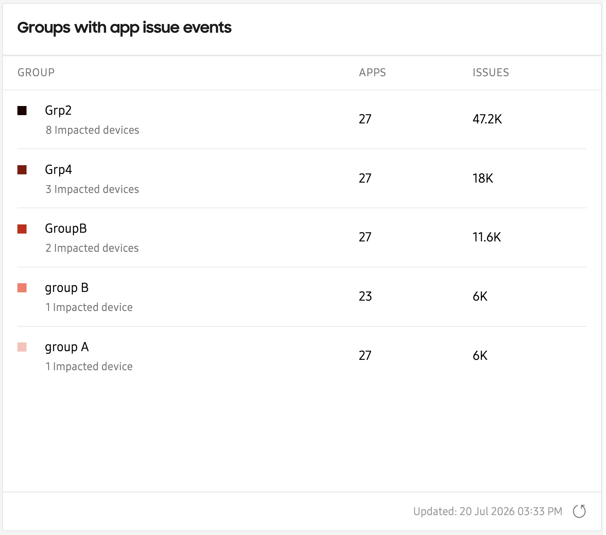
Click a group name in the tille to view the Apps with issue events expanded details page, filtered by events belonging to only that group.
Expanded details page
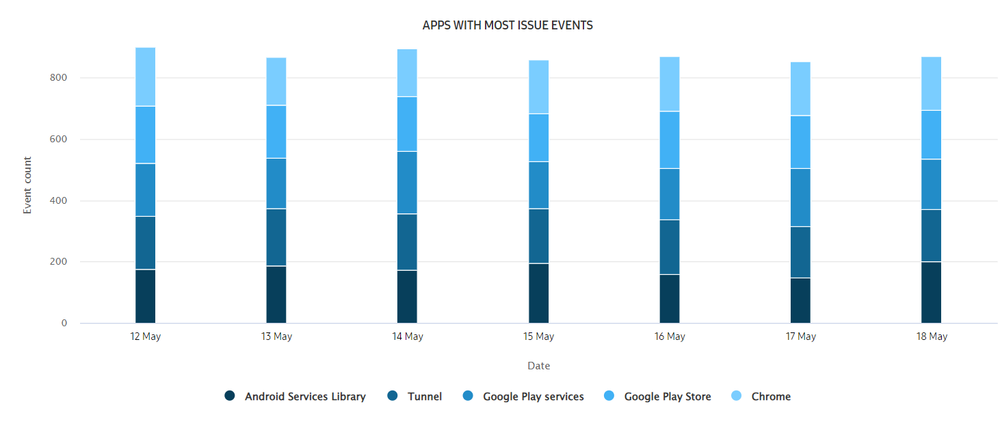
In the chart, the event types are further broken down by time period. By default, each bar in the chart represents the total event occurrences in one day. Hover over a bar segment to see how many times a type of event happened that day.
Below the chart, the detailed list separates the data by the following categories:
- APP — The name of the app. Click to see a drill-down page that provides additional details about issues related to this app.
- PACKAGE NAME — The package name of the app. For longer package names, hover over it to see the full name.
- DEVICE COUNT — The number of devices that reported issue events.
- TOTAL ISSUE EVENTS — The total number of application not responding, force close, and abnormal events.
- ANR EVENTS — The number of application not responding events that occurred. See App no response and force close events for more details.
- FORCE CLOSE EVENTS — The number of force close events that occurred. See App no response and force close events for more details.
- ABNORMAL EVENTS — The number of abnormal app events that occurred. See Abnormal app events for more details.
Drill-down pages
This insight has multiple drill-down pages, depending on which column you clicked in the expanded details page table. You can view a drill-down page by either clicking the app’s name in the APP column, or by clicking one of the event counts in the ANR EVENTS, FORCE CLOSE EVENTS, or ABNORMAL EVENTS columns.
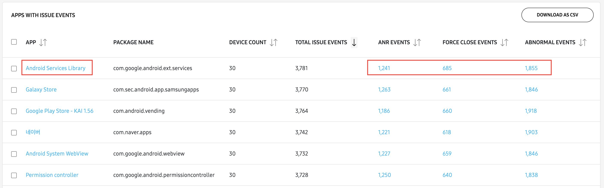
Drill-down page from APP column
When clicking an app’s name in the expanded details page table, you’ll find two charts and a table to help you investigate and troubleshoot your issues further.

APP VERSIONS WITH MOST ISSUE EVENTS chart
The APP VERSIONS WITH MOST ISSUE EVENTS chart displays the different versions of your app that caused issues over the selected reporting period. Using the map legend, you can click a specific app version to either show or hide it on the map easier analysis. To view additional details like the total event count across all issues, along with a breakdown of the total event count per issue (for that specific version of the app), hover over any node on the chart.
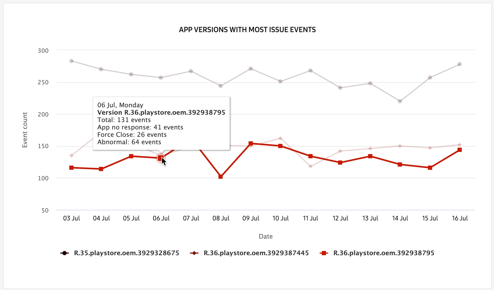
APP VERSIONS WITH MOST IMPACTED DEVICES chart
The APP VERSIONS WITH MOST IMPACTED DEVICES chart displays the different versions of your app that caused issues over the selected reporting period. Using the map legend, you can click a specific app version to either show or hide it on the map for easier analysis. To view the total number of devices that reported issues for that specific version of the app, hover over any node on the chart.
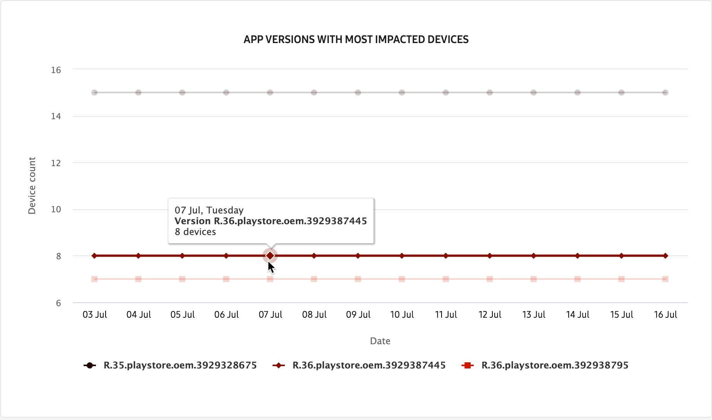
APP VERSIONS FOR [APP NAME] table
In the APP VERSIONS FOR [APP NAME] table, you can see a list of different app versions that caused issues, along with a total event count for each issue type. Click an event count in either the ANR EVENTS, FORCE CLOSE EVENTS, or ABNORMAL EVENTS columns to go to another drill-down page that shows which devices reported the events, the event times, and the app classes that triggered the issue.
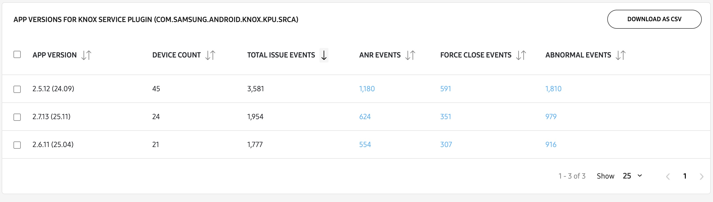
To help you further investigate ANR and FORCE CLOSE events more effectively, you can click the respective Download or View links in the CALL STACK column to see a sequence of function-calls leading up to the error. This information can help you pinpoint the root cause of issues, and can be provided to the customer support team to aid with troubleshooting.
ABNORMAL APP events do not report call stack data.
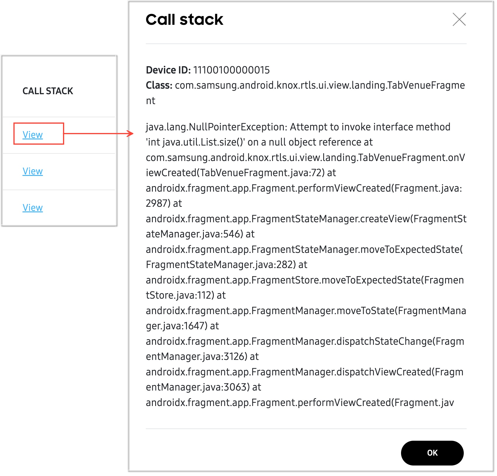
Select any device from the list and click the ACTIONS drop-down menu to request a debug log, request a snapshot, schedule a snapshot, or download a CSV file to help troubleshoot the issue further.
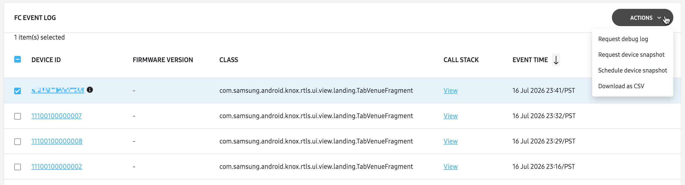
Drill-down page from ANR EVENTS or FC EVENTS columns
The drill-down pages for both ANR and FORCE CLOSE issues have identical charts, tables, and actions.
When clicking an event count in either the ANR EVENTS or FORCE CLOSE EVENTS columns of the expanded details page table, you’ll find a chart and table to help you investigate the cause of your issues further.

ANR/FC EVENTS BY APP AND OS VERSION chart
The ANR/FC EVENTS BY APP AND OS VERSION charts show a breakdown of the events by app and OS version. Hover over any segment of the chart to view the total event count and the total number of impacted devices per app version. In the pop-up window, you can click the event count download link to receive a CSV file containing additional event details to help you troubleshoot the issue further.
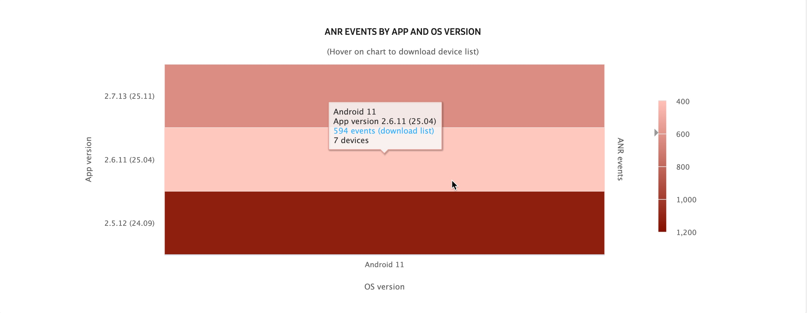
ANR/FC EVENT LOG table
In the ANR/FC EVENT LOG tables, you can see a list of the different devices that reported the respective issues, along with app version and call stack information to help you pinpoint the cause of errors and troubleshoot more accurately.
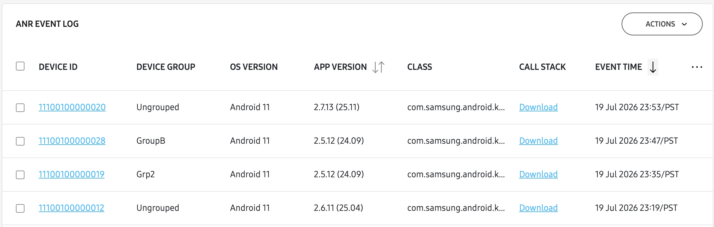
- For the ANR events, you can download the call stack data as a .TXT file by clicking the Download link in the CALL STACK column.
- For the FC events, you can click VIEW in the CALL STACK column to get extended call stack data in a pop-up window on the console.
Select any device from the list and click the ACTIONS drop-down menu to request a debug log, request a snapshot, schedule a snapshot, or download a CSV file to help troubleshoot the issue further.
Drill-down page from ABNORMAL EVENTS column
When clicking an event count in the ABNORMAL EVENTS column of the expanded details page table, you’ll find a chart and table similar to the ones related to ANR and FC events.
ABNORMAL EVENTS BY APP AND OS VERSION chart
The ABNORMAL EVENTS BY APP AND OS VERSION charts show a breakdown of the events by app and OS version. Hover over any segment of the chart to view the total event count and the total number of impacted devices per app version. In the pop-up window, you can click the event count download link to receive a CSV file containing additional event details to help you troubleshoot the issue further.
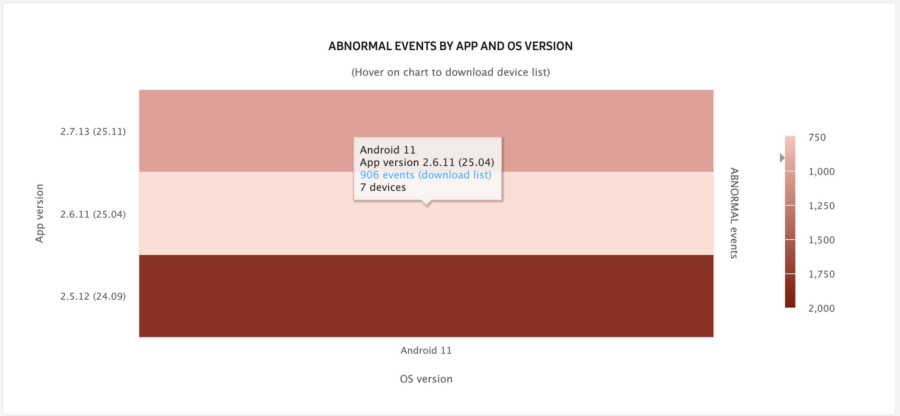
- For the ANR (application not responding) events, you can download the full call stack as TXT file from the console by clicking the Download link in the CALL STACK column.
- For the FC (Force close) events, you can click VIEW in the CALL STACK column to get extended call stack data in a popup on the console.
The ABNORMAL EVENT LOG table mostly consists of the same information found in the ANR and FC event log tables, except instead of call stack data, you can pinpoint the cause of the issues using the EVENT TYPE column.
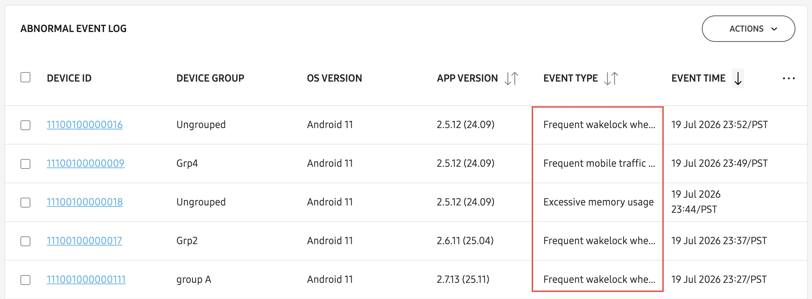
Select any device from the list and click the ACTIONS drop-down menu to request a debug log, request a snapshot, schedule a snapshot, or download a CSV file to help troubleshoot the issue further.
To only see data related to a specific abnormal event type, you can use the (filter) button near the top-right corner of the page to open the SET FILTERS side-panel. In the Event type drop-down menu, select the abnormal events you want to analyze, then click APPLY.
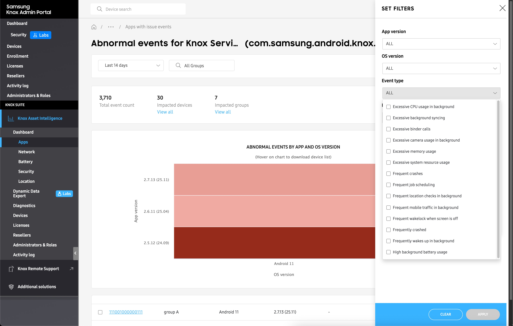
On this page
Is this page helpful?